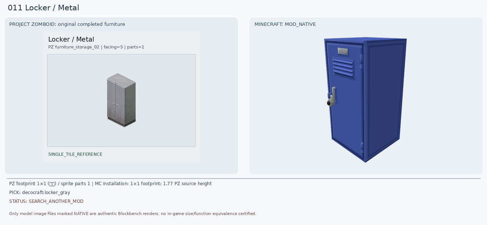
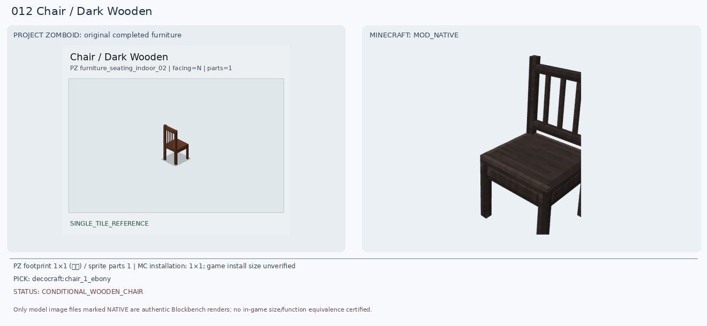
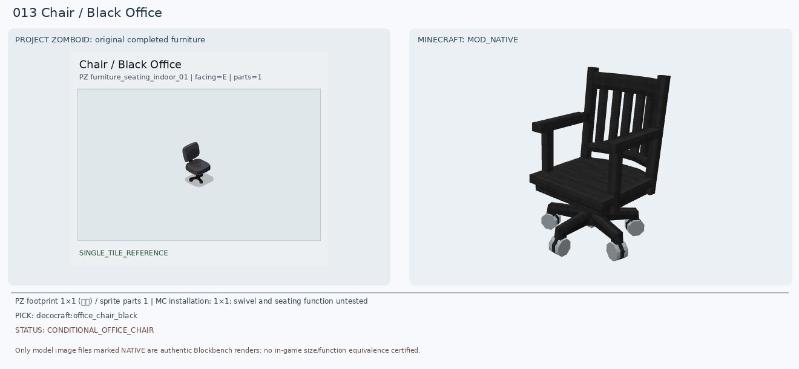
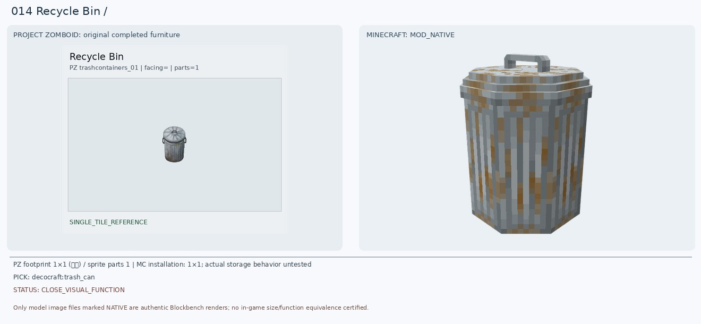
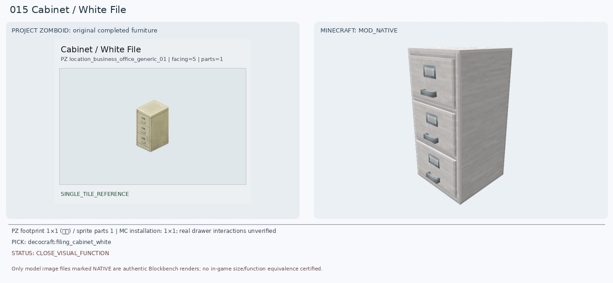
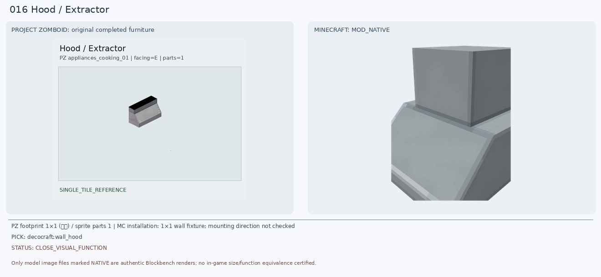
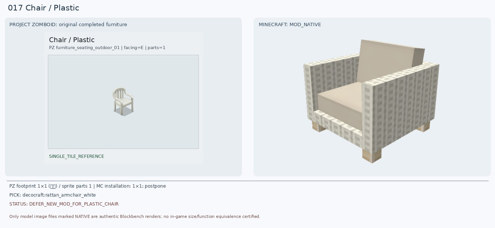
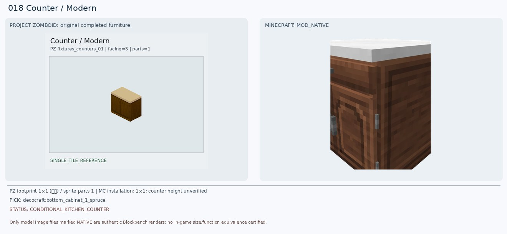
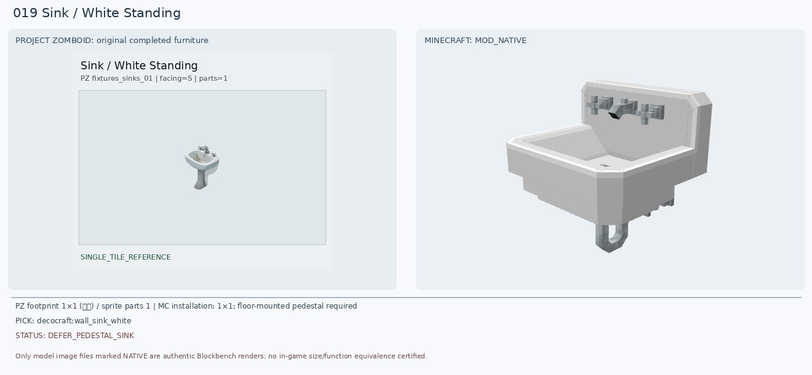
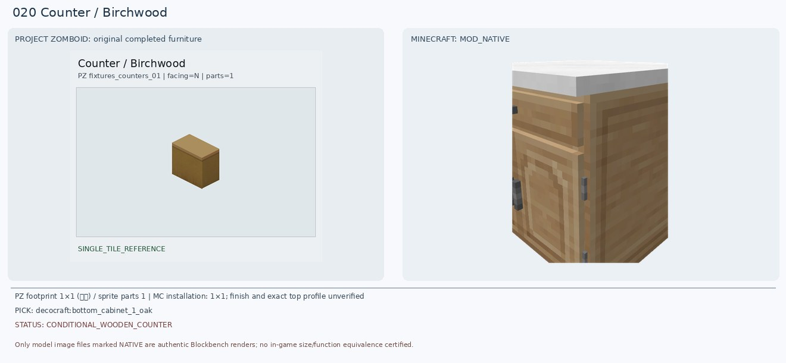

11. Locker / Metal
새 후보: decocraft:locker_gray
보조 후보: decocraft:locker_light_gray
판정: SEARCH_ANOTHER_MOD
원본 형태: gray 2-door metal locker
크기: PZ 1×1 (임시) / 1×1 footprint; 1.77 PZ source height
이유: 원본은 회색 금속 양문형 락커, Decocraft는 단문 루버 도어이고 실제 렌더에서 파란색으로 나와 색상/문 수가 다름. 최종 치환 보류. 다른 모드에서 양문형 회색 1칸 락커 검색.
원본 타일 속성
{"BlocksPlacement": [""], "CanBreak": [""], "CanScrap": [""], "ContainerCloseSound": ["LockerMetalLargeClose"], "ContainerOpenSound": ["LockerMetalLargeOpen"], "ContainerPutSound": ["LockerMetalLargeTransferItem"], "ContainerTakeSound": ["LockerMetalLargeTransferItem"], "CustomName": ["Locker"], "Facing": ["S"], "GroupName": ["Metal"], "IsMoveAble": [""], "Material": ["MetalPlates"], "Material2": ["SmallMetalPlates"], "Material3": ["MetalScrap"], "MaterialType": ["Metal_Light"], "PickUpLevel": ["4"], "PickUpTool": ["Hammer"], "PickUpWeight": ["250"], "PlaceTool": ["Hammer"], "Surface": ["69"], "container": ["metal_shelves"], "solidtrans": [""]}
12. Chair / Dark Wooden
새 후보: decocraft:chair_1_ebony
보조 후보: decocraft:chair_1_spruce
판정: CONDITIONAL_WOODEN_CHAIR
원본 형태: dark wooden four-leg slat-back chair
크기: PZ 1×1 (임시) / 1×1; game install size unverified
이유: 원본은 짙은 갈색 네 다리 세로살 등받이 목재 의자. Decocraft Ebony 실모델은 다리와 등받이 구조가 근접하나 검정에 가까운 더 어두운 색임. 기존 Paladin 모델은 부품 누락이라 반려.
원본 타일 속성
{"BedType": ["badBed"], "BlocksPlacement": [""], "CanScrap": [""], "CustomName": ["Chair"], "Facing": ["N"], "GroupName": ["Dark Wooden"], "IsLow": [""], "IsMoveAble": [""], "Material": ["Wood"], "Material2": ["Nails"], "MaterialType": ["Wood"], "PickUpWeight": ["75"], "ScrapSize": ["Small"], "SeatMaterial": ["Wooden"], "Surface": ["17"], "bed": [""], "chairN": [""]}
13. Chair / Black Office
새 후보: decocraft:office_chair_black
보조 후보: decocraft:gaming_chair_black
판정: CONDITIONAL_OFFICE_CHAIR
원본 형태: black no-armrest compact swivel office chair
크기: PZ 1×1 (임시) / 1×1; swivel and seating function untested
이유: 바퀴·회전식 베이스는 원본과 같지만 새 Office Chair는 목재 슬랫 등받이와 팔걸이가 있고 PZ는 팔걸이가 없는 단순 패드형. 게임 의자는 과장된 고등받이라 차선.
원본 타일 속성
{"BedType": ["badBed"], "BlocksPlacement": [""], "CanScrap": [""], "CustomName": ["Chair"], "Facing": ["E"], "GroupName": ["Black Office"], "IsLow": [""], "IsMoveAble": [""], "Material": ["Foam"], "Material2": ["Fabric"], "Material3": ["PlasticHard"], "MaterialType": ["Plastic"], "PickUpWeight": ["75"], "ScrapSize": ["Small"], "SeatMaterial": ["CastorChair"], "Surface": ["17"], "bed": [""], "chairE": [""]}
14. Recycle Bin
새 후보: decocraft:trash_can
보조 후보: refurbished_furniture:recycle_bin
판정: CLOSE_VISUAL_FUNCTION
원본 형태: lidded corrugated metal round trash can
크기: PZ 1×1 (임시) / 1×1; actual storage behavior untested
이유: 원본은 리브 무늬와 둥근 뚜껑이 있는 은회색 금속 쓰레기통. Decocraft Trash Can은 실제 렌더에서 둥근 통, 세로 주름, 윗뚜껑이 가까워 기존 불완전 Refurbished 렌더보다 낫지만 녹·손잡이 세부가 다름.
원본 타일 속성
{"BlocksPlacement": [""], "CanScrap": [""], "ContainerCapacity": ["10"], "ContainerCloseSound": ["BinMetalCoverClose"], "ContainerOpenSound": ["BinMetalCoverOpen"], "ContainerPutSound": ["BinMetalCoverTransferItem"], "ContainerTakeSound": ["BinMetalCoverTransferItem"], "CustomName": ["Recycle Bin"], "DamagedSprite": ["damaged_objects_01_14"], "HitByCar": [""], "IsLow": [""], "IsMoveAble": [""], "IsTrashCan": [""], "Material": ["MetalScrap"], "Material2": ["PlasticBag"], "PickUpWeight": ["50"], "SnowTile": ["object_snow_overlay_04_209"], "container": ["bin"]}
15. Cabinet / White File
새 후보: decocraft:filing_cabinet_white
보조 후보: decocraft:filing_cabinet_birch
판정: CLOSE_VISUAL_FUNCTION
원본 형태: off-white vertical three-drawer filing cabinet
크기: PZ 1×1 (임시) / 1×1; real drawer interactions unverified
이유: 원본은 아이보리색 금속 세 서랍 파일 캐비닛. Decocraft Filing Cabinet White는 정확히 세 서랍과 정면 손잡이 형태를 갖췄음. 아이보리 색상/낡은 정도와 손잡이 간격은 다름. 기존 주방 수납장 반려.
원본 타일 속성
{"BlocksPlacement": [""], "CanScrap": [""], "ContainerCapacity": ["15"], "ContainerCloseSound": ["DrawerMetalClose"], "ContainerOpenSound": ["DrawerMetalOpen"], "ContainerPutSound": ["DrawerMetalTransferItem"], "ContainerTakeSound": ["DrawerMetalTransferItem"], "CustomName": ["Cabinet"], "Facing": ["S"], "GroupName": ["White File"], "IsLow": [""], "IsMoveAble": [""], "ItemHeight": ["50"], "Material": ["SmallMetalPlates"], "Material2": ["MetalScrap"], "MaterialType": ["Metal"], "PickUpWeight": ["120"], "container": ["filingcabinet"], "solidtrans": [""]}
16. Hood / Extractor
새 후보: decocraft:wall_hood
보조 후보: refurbished_furniture:light_range_hood
판정: CLOSE_VISUAL_FUNCTION
원본 형태: silver trapezoid wall extractor hood
크기: PZ 1×1 (임시) / 1×1 wall fixture; mounting direction not checked
이유: 원본의 은색 비스듬한 배기후드에 가까운 벽걸이 모델을 확보. 다만 새 Wall Hood는 상부 덕트가 더 높고 원본의 검은 상단 띠와 구조가 다름. 이전 Refurbished 렌더는 일부 큐브만 보였음.
원본 타일 속성
{"BlocksPlacement": [""], "CanScrap": [""], "CustomName": ["Hood"], "Facing": ["E"], "GroupName": ["Extractor"], "IsHigh": [""], "IsMoveAble": [""], "Material": ["Electric"], "Material2": ["SmallMetalPlates"], "MaterialType": ["Metal"], "MoveType": ["WallObject"], "PickUpTool": ["Electrician"], "PlaceTool": ["Electrician"], "WallObjectAllowDoorframe": [""], "attachedCeiling": [""]}
17. Chair / Plastic
새 후보: decocraft:rattan_armchair_white
보조 후보: decocraft:beach_chair_white
판정: DEFER_NEW_MOD_FOR_PLASTIC_CHAIR
원본 형태: cream plastic monobloc chair with integrated armrests
크기: PZ 1×1 (임시) / 1×1; postpone
이유: PZ는 하나로 성형된 흰 플라스틱 야외 의자로 곡선 등받이와 일체형 팔걸이. 새 라탄 의자는 직조+두꺼운 방석이고 Beach Chair는 캔버스형. 둘 다 재질/구조가 달라 최종 매칭 보류. Skniro 등에서 플라스틱 성형 의자 추후 탐색.
원본 타일 속성
{"BedType": ["badBed"], "BlocksPlacement": [""], "CanScrap": [""], "CustomName": ["Chair"], "Facing": ["E"], "GroupName": ["Plastic"], "IsLow": [""], "IsMoveAble": [""], "Material": ["PlasticHard"], "MaterialType": ["Plastic"], "PickUpWeight": ["50"], "ScrapSize": ["Small"], "SeatMaterial": ["Plastic"], "SnowTile": ["object_snow_overlay_01_64"], "Surface": ["17"], "bed": [""], "chairE": [""]}
18. Counter / Modern
새 후보: decocraft:bottom_cabinet_1_spruce
보조 후보: decocraft:bottom_cabinet_1_oak
판정: CONDITIONAL_KITCHEN_COUNTER
원본 형태: dark wooden double-door counter with light stone top
크기: PZ 1×1 (임시) / 1×1; counter height unverified
이유: 원본은 어두운 목재 2도어 하부장과 밝은 베이지색 상판. 새 Spruce 하부장은 갈색 본체+밝은 상판으로 접근하지만 위쪽 서랍 한 개와 아래 문 한 개로 원본 2도어 구조와 다르고 높이도 달라 설치 비교 필요.
원본 타일 속성
{"BlocksPlacement": [""], "CanBreak": [""], "CanScrap": [""], "ContainerCloseSound": ["DoorWoodMediumClose"], "ContainerOpenSound": ["DoorWoodMediumOpen"], "ContainerPosition": ["Low"], "ContainerPutSound": ["DoorWoodMediumTransferItem"], "ContainerTakeSound": ["DoorWoodMediumTransferItem"], "CountertopAttach": [""], "CustomName": ["Counter"], "Facing": ["S"], "GenericCraftingSurface": ["true"], "GroupName": ["Modern"], "IsLow": [""], "IsMoveAble": [""], "IsTable": [""], "Material": ["Wood"], "Material2": ["Nails"], "PickUpLevel": ["2"], "PickUpTool": ["Hammer"], "PickUpWeight": ["100"], "PlaceTool": ["Hammer"], "Surface": ["35"], "container": ["counter"], "solidtrans": [""]}
19. Sink / White Standing
새 후보: decocraft:wall_sink_white
보조 후보: decocraft:round_sink_silver
판정: DEFER_PEDESTAL_SINK
원본 형태: freestanding white ceramic pedestal basin with faucets
크기: PZ 1×1 (임시) / 1×1; floor-mounted pedestal required
이유: PZ는 독립형 하얀 도기 세면대로 긴 받침 기둥을 가진다. 새 Wall Sink White는 수전과 물받이만 유사하며 벽에 설치되어 페데스털이 없음. Round Sink Silver도 상판 거치형. Skniro/욕실 가구 모드에서 받침 기둥 포함 모델 탐색 보류.
원본 타일 속성
{"BlocksPlacement": [""], "CanBreak": [""], "CanScrap": [""], "CustomName": ["Sink"], "Facing": ["S"], "GroupName": ["White Standing"], "IsLow": [""], "IsMoveAble": [""], "IsSurfaceOffset": [""], "Material": ["Plumbing"], "Material2": ["Pipes"], "Material3": ["Sink"], "MoveType": ["WallObject"], "PickUpTool": ["Wrench"], "PickUpWeight": ["50"], "PlaceTool": ["Wrench"], "ScrapSize": ["Small"], "SinkType": ["Ceramic"], "Surface": ["34"], "attachedN": [""], "waterAmount": ["20"], "waterMaxAmount": ["20"], "waterPiped": [""]}
20. Counter / Birchwood
새 후보: decocraft:bottom_cabinet_1_oak
보조 후보: decocraft:bottom_cabinet_1_birch
판정: CONDITIONAL_WOODEN_COUNTER
원본 형태: plain honey-brown wood enclosed kitchen counter
크기: PZ 1×1 (임시) / 1×1; finish and exact top profile unverified
이유: 원본은 꿀빛 갈색 단정한 장식 없는 카운터. 새 Oak 하부장은 따뜻한 나무색은 가까우나 흰 상판, 장식 문짝/서랍이 추가됨. 기존 Macaw Birch Counter는 회색 몸통이라 더 먼 후보. 바닐라 배럴/각목 블록도 추후 비교 가능.
원본 타일 속성
{"BlocksPlacement": [""], "CanBreak": [""], "CanScrap": [""], "ContainerCloseSound": ["DoorWoodMediumClose"], "ContainerOpenSound": ["DoorWoodMediumOpen"], "ContainerPosition": ["Low"], "ContainerPutSound": ["DoorWoodMediumTransferItem"], "ContainerTakeSound": ["DoorWoodMediumTransferItem"], "CountertopAttach": [""], "CustomName": ["Counter"], "Facing": ["N"], "GenericCraftingSurface": ["true"], "GroupName": ["Birchwood"], "IsLow": [""], "IsMoveAble": [""], "IsTable": [""], "Material": ["Wood"], "Material2": ["Nails"], "PickUpLevel": ["2"], "PickUpTool": ["Hammer"], "PickUpWeight": ["100"], "PlaceTool": ["Hammer"], "Surface": ["35"], "container": ["counter"], "solidtrans": [""]}